Wildpflanzen
Bestimmung
Register
Systematik
Besucher
<
Rote, zygomorphe Blüten
>
Rote, zygomorphe Blüten
Pyramiden Günsel / Ajuga pyramidalis
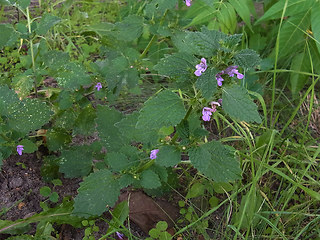
Schwarznessel / Ballota Nigra
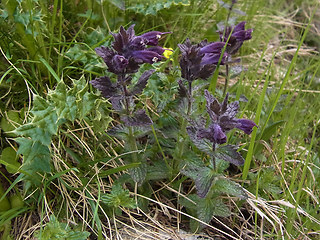
Alpenhelm / Bartsia Alpina
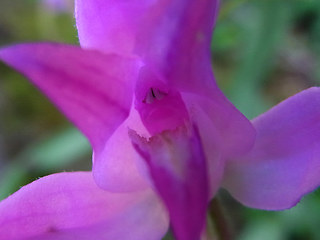
Rotes Waldvögelein / Cephalanthera Rubra
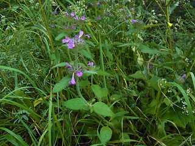
Gewöhnlicher Wirbeldost / Clinopodium Vulgare
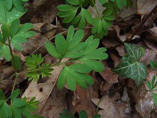
Gefingerter Lerchensporn / Corydalis Solida
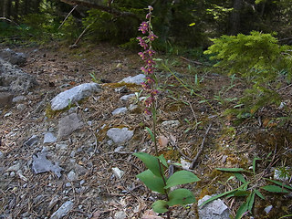
Rotbraune Ständelwurz / Epipactis Atrorubens
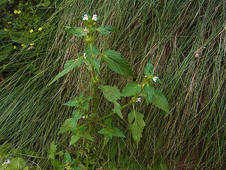
Stechender Hohlzahn / Galeopsis Tetrahit
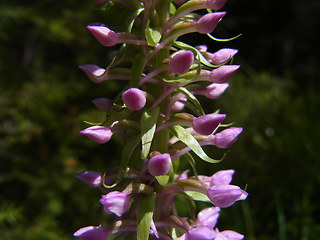
Große Händelwurz / Gymnadenia Conopsea
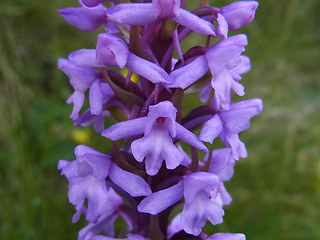
Alpen Händelwurz / Gymnadenia Conopsea ssp. alpina
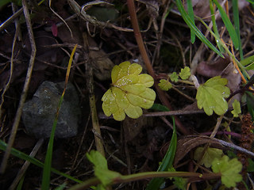
Stängelumfassende Taubnessel / Lamium Amplexicaule
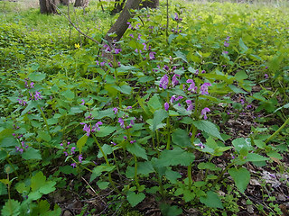
Gefleckte Taubnessel / Lamium Maculatum
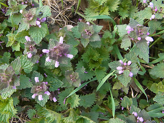
Purpurrote Taubnessel / Lamium Purpureum
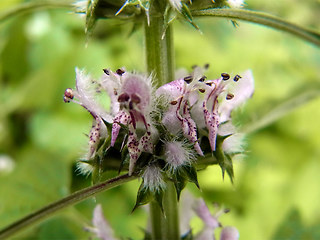
Echter Löwenschwanz / Leonurus Cardiaca
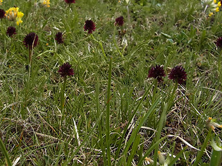
Schwarzes Kohlröschen / Nigritella Rhellican
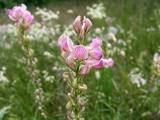
Saat-esparsette / Onobrychis Viciifolia
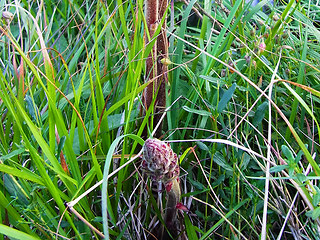
Blutrote Sommerwurz / Orobanche Gracilis
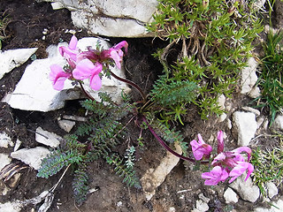
Kopfiges Läusekraut / Pedicularis Rostratocapitata
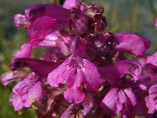
Quirlblaettriges Läusekraut / Pedicularis Verticillata
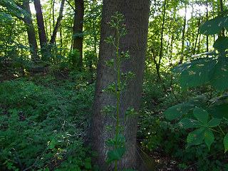
Knotige Braunwurz / Scrophularia Nodosa
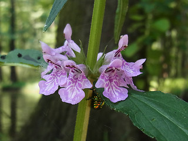
Sumpf Ziest / Stachys Palustris
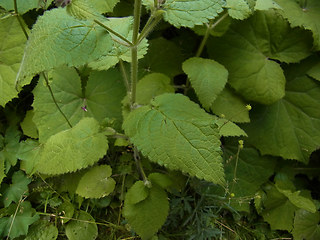
Wald Ziest / Stachys Sylvatica
Alpen Thymian / Thymus Praecox ssp. polytrichus
Alpen Klee / Trifolium Alpinum
nach oben